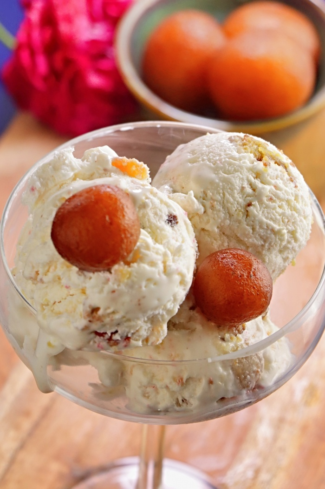

GULABJAMUN ICECREAM

This is an Indian Sub-continent Delicious Sweet Called "GulabJamun Icecream"
Ingredients:
- 1/2 tin Nestle MILKMAID
- 2 cups (200 gm) Flour
- 600 gm grated Paneer
- 200 gm Sooji/Rava
- 1 1/2 tsp Baking Powder
- 1 1/2 tsp Baking Soda
- as per requirement Oil for frying
- 2 Ltrs water
- 1 kg Sugar
- 6-8 nos, coarsely crushed Cardamom
Cooking Instructions
- Boil sugar and water to prepare syrup remove from fire; add cardamom and keep aside to cool.In a mixing bowl put the flour, paneer, sooji, Nestle MILKMAID, baking powder and baking soda. Mix gently to make a soft dough, do not knead too much.
Divide the mixture into 30-35 portions and gently roll into round gulab jamuns. Fry in the oil at very low flame till golden brown in color.
- Keep putting the fried gulab jamuns in the prepared sugar syrup, once all the gulab jamuns are in the sugar syrup bring it to a boil and remove from flame.
Serve warm.
Return to Top
Return to Homepage